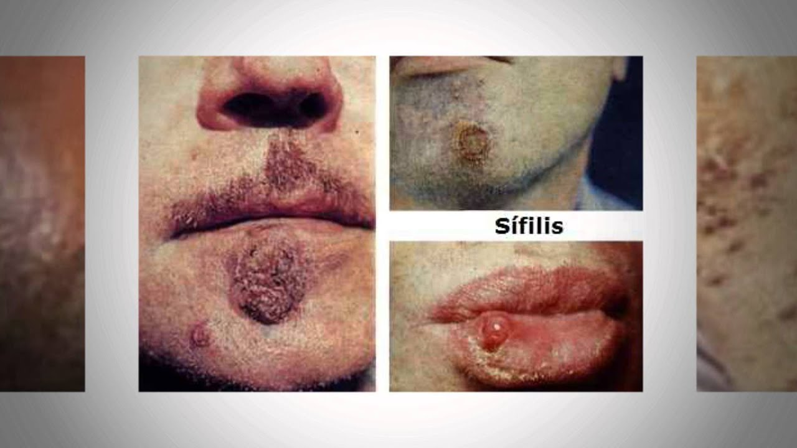

Luciana Lopera Caceres
Isabella Machado Martinez
ENFERMEDADES DE TRANSMISION SEXUAL
Sífilis La sífilis es una enfermedad de transmisión sexual muy común provocada por la bacteria “Treponema pallidum”, que origina una infección que cursa con inflamación de los genitales, el recto o la boca. Esta primera fase de la sífilis puede curarse con antibióticos. Después de esta fase inicial, la bacteria puede mantenerse en estado de reposo durante décadas antes de volver a activarse. De no tratarse, la sífilis puede desarrollarse hasta una etapa final con afectaciones graves en el corazón, cerebro y otros órganos, siendo potencialmente mortal.
La sífilis congénita se trata de una infección severa y potencialmente mortal causada por la misma bacteria que en el caso anterior. Esta infección afecta a los bebés incluso desde antes de nacer, ya que se transmite de la madre infectada al feto o bebé ya sea a través de la placenta durante el embarazo o bien, en el parto. La mayoría de los bebés infectados no suelen presentar síntomas de padecer sífilis, por lo que si la madre ha padecido esta ITS u otra, será imprescindible realizar las pruebas pertinentes al recién nacido y asignarle el tratamiento adecuado. De no ser así, la sífilis puede provocar consecuencias graves para su salud como ceguera, sordera, inflamación articular o dolor de huesos, entre otros.
La sífilis congénita se trata de una infección severa y potencialmente mortal causada por la misma bacteria que en el caso anterior. Esta infección afecta a los bebés incluso desde antes de nacer, ya que se transmite de la madre infectada al feto o bebé ya sea a través de la placenta durante el embarazo o bien, en el parto. La mayoría de los bebés infectados no suelen presentar síntomas de padecer sífilis, por lo que si la madre ha padecido esta ITS u otra, será imprescindible realizar las pruebas pertinentes al recién nacido y asignarle el tratamiento adecuado. De no ser así, la sífilis puede provocar consecuencias graves para su salud como ceguera, sordera, inflamación articular o dolor de huesos, entre otros.
